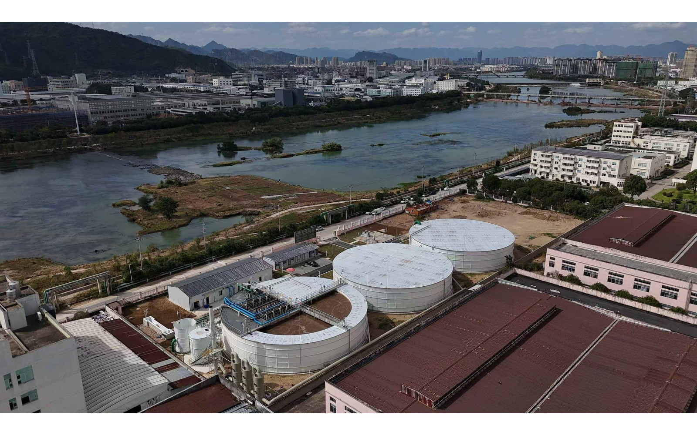
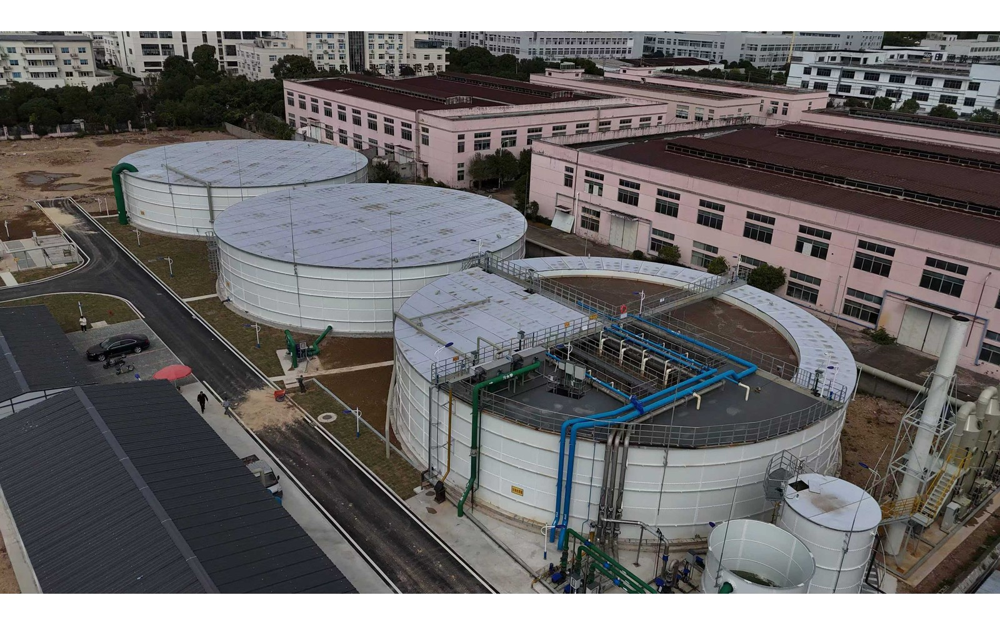
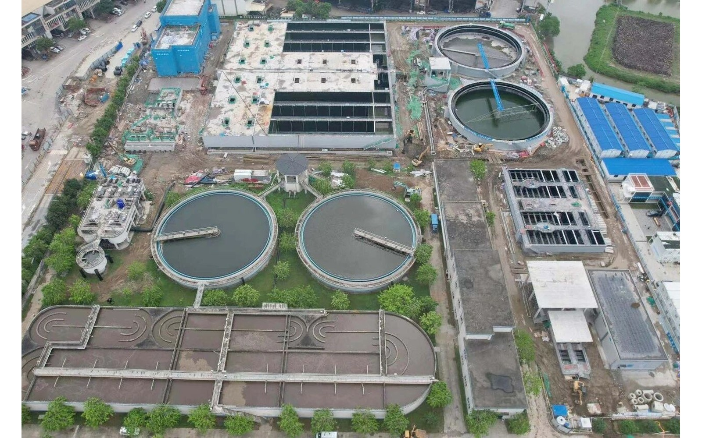

GUWEIENVIRONMENTAL
GUWEIENVIRONMENTAL12,000 m³/d
Design Treatment Flow
Solutions / Industrial Wastewater
Treatment processes, equipment and site layouts coordinated around production wastewater, site conditions and discharge requirements.
01 / Project Overview
Located in Shilong Industrial Zone, Lunjiao, Shunde District, Foshan, the project addresses textile dyeing wastewater treatment within a constrained site.


Design Treatment Flow
Peak Treatment Flow
Core Design Process
Prefabricated corrosion-protected bolted tanks use vertical space to accommodate equalization, anoxic and aerobic units within the compact site.
Level, flow and water quality monitoring with electrical controls links lifting, aeration, membrane permeate production and sludge treatment.
02 / Processes & Systems
The design combines magnetically ballasted coagulation and sedimentation with AO + MBR for suspended solids removal, biological treatment and solid–liquid separation.
Excess sludge → Sludge storage → Plate-and-frame filter press → Off-site disposal of dewatered sludge
03 / Project Equipment
The specifications and quantities below are from the design documents. Final installed configuration: 待确认.
| Equipment | Specification | Design quantity | Function |
|---|---|---|---|
| Fine Screen | Width 900 mm; bar spacing 5 mm | 2 units (1 duty, 1 standby) | Intercepts larger suspended solids in the influent |
| Equalization Tank Lift Pump | Q = 390 m³/h; H = 15 m; variable-frequency drive | 3 units (2 duty, 1 standby) | Pumps wastewater from equalization to downstream treatment |
| MBR Membrane Modules | PVDF hollow-fibre membranes with SS304 frames | 16 sets | Solid–liquid separation |
| Plate-and-frame Filter Press | Filtration area: 300 m² | 2 sets | Sludge Dewatering |
| Integrated PAM Preparation Unit | Preparation capacity: 2,000 L/h; with dosing pumps | 2 sets | Chemical preparation and dosing |
Equipment models and final installed configuration: 待确认.
04 / Site Implementation
Capacity: 60,000 m³/d. In operation since May 2025, using modified UCT biological treatment, continuous sand filtration and contact disinfection.


05 / Supporting Equipment
Review industrial effluent and factory domestic wastewater separately before selecting treatment processes and equipment combinations.

Discuss packaged equipment based on occupancy, flow variation and discharge destination.
Determine the equipment's role in the overall design using production processes, water quality tests and pretreatment conditions.
Check available space, pipe connections, power and maintenance access for new-build or retrofit projects.
View Wastewater Treatment Equipment
Discuss plate-and-frame filter presses and supporting equipment based on industrial sludge properties, throughput and dewatering requirements.
Explore Filter Presses1. What the factory produces and which processes generate wastewater.
2. Approximate daily flow, discharge destination and whether production can stop during a retrofit.
3. The issue you most want to resolve.
You can start with the information you have, even without complete drawings or technical documents.
Share the project type, capacity and contact details so we can discuss your technical requirements.
Online enquiries are not currently available. Please contact us by phone. +86 18026396076